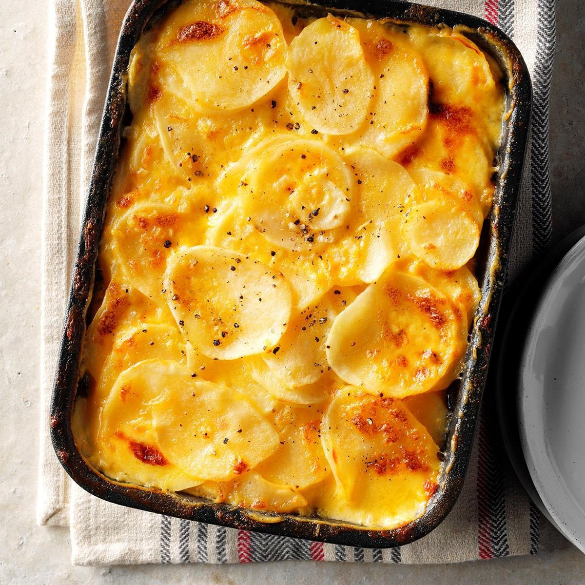

au Gratin Potatpes

These cheesy potatoes will surely be a hit
INGREDIENTS
- (4) Yukon gold potatoes, sliced in to 1/4 inch disks
- (4)oz Extra sharp cheddar cheese, grated
- (1) Small onion, sliced
- (2) cups Heavy Cream
- (3) Tbsp Butter
- (3) Tbsp Flour
- Salt & Pepper to taste
DIRECTIONS
- Start by preheating oven to 400 Degrees F
- Grease ovensafe baking pan and add one layer of sliced potatoes
- Melt butter in pan over medium low heat
- Add flour to melted butter and mix together well, until flour is browned
- Slowly stir in heavy cream
- Add shredded cheese while stiring constantly, salt and pepper to taste
- Once chesse is melted, pour over potatoes, just enough to cover
- Continue to layer onions, potatoes, and cheese sauce until pan is full
- Bake in 400 Degree F oven for 1 hour
This is time consuming but so worth it! Goes well with Elk Steak
If you enjoyed this recipe please let me know!